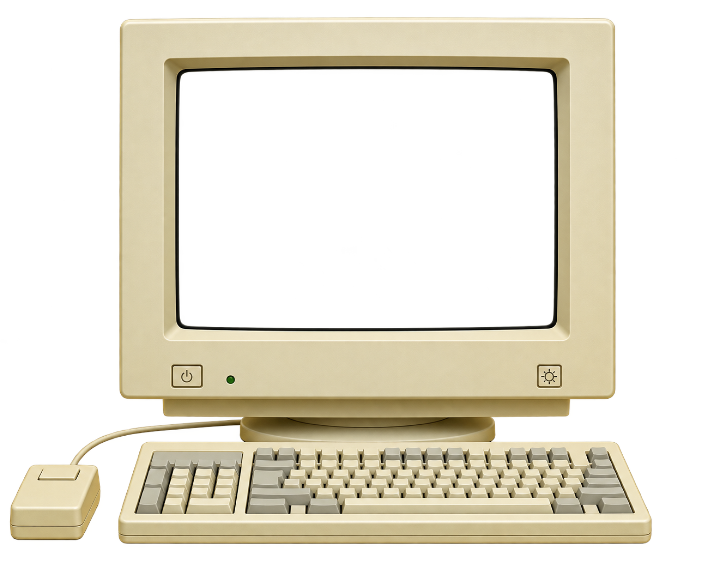
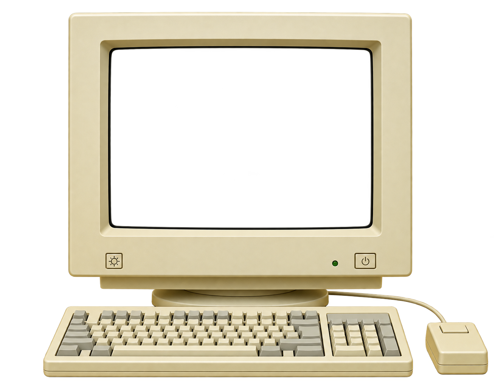
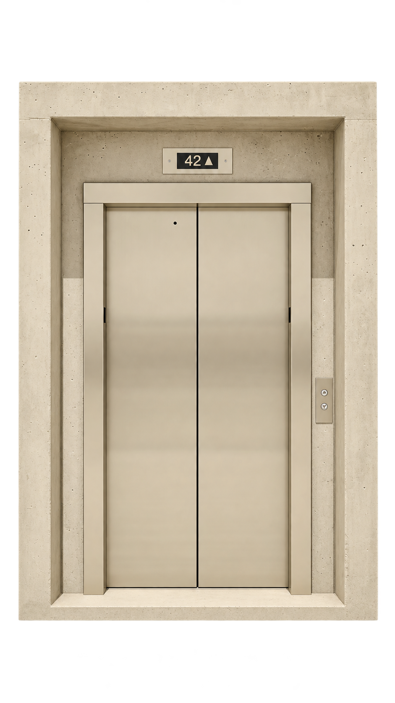
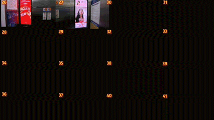
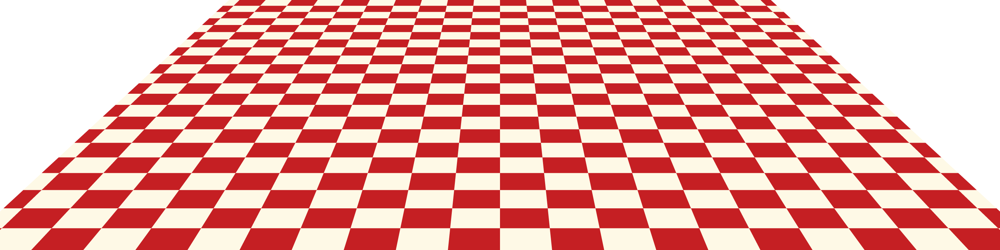

Посмотрите

Кадр рекламы на экране

На экранах азиатской рекламы всё мигает, кричит и меняется быстрее, чем вы успеваете понять, что происходит.
Но если посмотреть несколько таких роликов подряд, вы быстро заметите одну и ту же схему: название продукта повторяют снова и снова, пока оно буквально не застревает в голове.
Очень громко
Очень много шума
Видео можно закрыть
или пролистать.
Но иногда реклама
оказывается
там, откуда не уйти…
в лифте

В Китае рекламные экраны давно стали обычной частью лифтов в жилых
домах
и офисах.
Один из крупнейших операторов такой рекламы, Focus Media, пишет, что его сеть охватывает 300 городов, больше трёх миллионов экранов и около 400 миллионов человек ежедневно.

Осенью 2025 года студент из Шанхая купил в интернете универсальный ключ за 10 юаней и за пять дней выключил больше ста рекламных экранов в лифтах жилых домов.
Сам студент называл акцию перформансом и протестом против навязчивой рекламы.
Сегодня реклама добралась
даже до лифтов.
Но борьба
за внимание покупателей
началась задолго до экранов.
На то, какой реклама
стала сегодня, повлияло
множество
исторических
и культурных факторов.
улица уже кричала
В старом Китае уличные торговцы
не просто выкрикивали цены.
Они придумывали рифмы, пели и превращали
описание товара в короткое выступление.
В эпоху Цин такие выкрики
даже записывали
в
специальные сборники.
Похожая традиция была
и в Японии. В XIX веке там
появились
уличные рекламщики —
предшественники тиндонъя,
музыкантов-зазывал,
которые
выходят на улицы до сих пор.
В ярких костюмах, с
барабанами
и музыкальными инструментами
они ходили по
улицам,
привлекая покупателей.
продажа через шоу

С улицы шоу переехало на японское телевидение, где ролик часто длится всего 15 секунд.
Отсюда — абсурд, странные костюмы, знаменитости, навязчивые мелодии и преувеличенные эмоции.
В 2007 году SoftBank запустил серию роликов, в которых отцом обычной человеческой семьи оказался говорящий белый пёс.
Много —
не значит
плохо
Та же плотность —
в интернет-рекламе
и на маркетплейсах. Кажется,
что это плохой дизайн.
Но для части аудитории множество цен, плашек
и акций — это возможность сравнить предложения
и найти выгоду.
В 2016 году исследователи
Nielsen Norman Group сравнили,
как
китайские и иностранные
пользователи воспринимают
сложные
сайты.
Китайские участники оказались
более привычными
к высокой
плотности информации.
Но и им было трудно ориентироваться
на слишком перегруженных страницах.
Граница между «достаточно информации»
и «слишком много информации» может
восприниматься по-разному.
посмотрите снова
Изменились технологии,
но задача осталась прежней:
заставить
человека
остановиться и посмотреть.
А что покажется шумом,
а
что — нормой,
зависит от того,
где вы
привыкли смотреть.